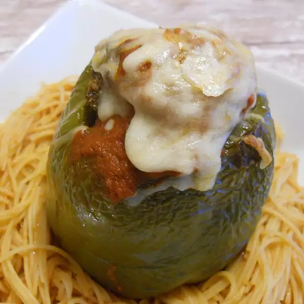

Stuffed Peppers

Description
This recipe describes how to make stuffed peppers. These peppers are made in the oven. This recipe yields 4 servings.
Ingredients
- 1 pound ground beef
- ½ cup bread crumbs
- ½ teaspoon Italian seasoning
- 3 cloves garlic, chopped
- ¾ cup shredded mozzarella cheese
- ¾ cup grated Parmesan cheese
- 1 egg, lightly beaten
- 6 white mushrooms, chopped
- ½ small onion, finely chopped
- 4 bell peppers, tops cut off and seeded
- 1 (26 ounce) can spaghetti sauce
Steps
- Preheat oven to 350 degrees F (175 degrees C). Line a 9x13 inch baking dish with aluminum foil.
- In a large bowl, mix together ground beef, bread crumbs, Italian seasoning, garlic, 1/2 cup of the mozzarella cheese, 1/2 cup of the Parmesan cheese, egg, onion and mushrooms. Spoon mixture evenly into the seeded bell peppers. Replace tops. Place stuffed peppers in lined baking dish.
- Bake in preheated oven for one hour, or until meat stuffing is cooked through. Remove from oven and discard pepper tops.
- Sprinkle tops of peppers with remaining mozzarella and Parmesan cheeses. Return dish to oven until cheese is melted, about two minutes.
- In a saucepan, heat spaghetti sauce on stove over medium heat, stirring regularly. When sauce begins to steam, remove from heat and pour over top of peppers.